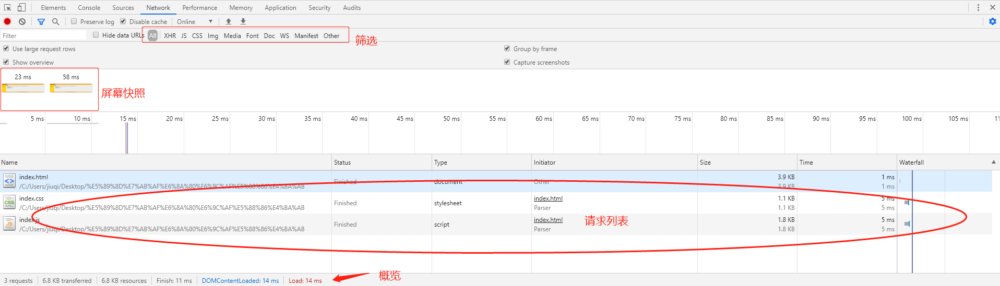

元素面板
使用元素面板可以自由的操作DOM和CSS来迭代布局和设计页面.测试时常通过手动增加字数，查看展示效果,验证内容过多时样式是否变形。
例如：
-
内容多的时候应该以'...'展示:
该文本容器宽度超出500像素后截取内容以 '...' 表示 -
做自动测试中定位元素：
通过操作开发者工具elements演示该功能。
控制台面板
在开发期间，可以使用控制台面板记录诊断信息，或者使用它作为 shell在页面上与JavaScript交互。
-
目前在测试中未使用到：
通过在操作开发者工具Console面板上执行javascript演示该功能。
源代码面板
开发时断点调试
-
目前在测试中未使用到：
暂不演示。
网络面板
使用网络面板了解请求和下载的资源文件并优化网页加载性能。另外，调试模式下，强烈建议勾选Disable cache选项，以避免缓存引起的一些诡异问题。
-
录制页面快照：
通过在操作开发者工具Network面板上演示该功能。 该功能同Performance
性能面板
使用性能面板了解请求和下载的资源文件并优化网页加载性能。


AJAX
使用Ajax的最大优点，就是能在不更新整个页面的前提下维护数据。这使得Web应用程序更为迅捷地回应用户动作，并避免了在网络上发送那些没有改变的信息。 Ajax不需要任何浏览器插件，但需要用户允许JavaScript在浏览器上执行。
学习网站